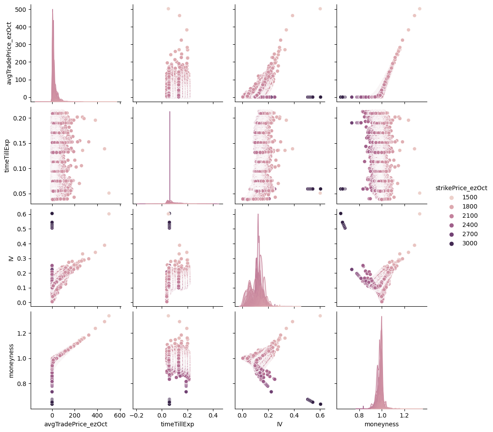
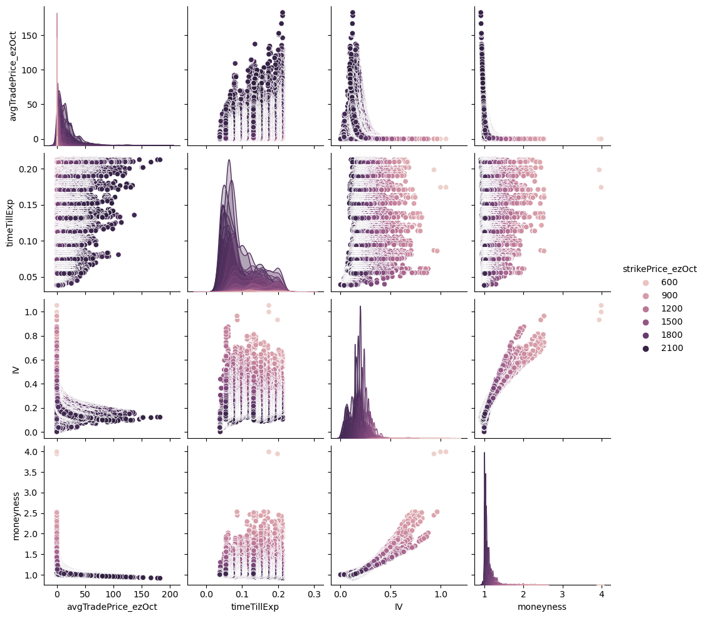

Deep Neural Nets for Option Pricing
Table of Contents
See this paper for an early analysis which used neural nets to learn the Black-Scholes model.
1. Data
The data we'll use is
import pandas as pd
import seaborn as sns
import matplotlib.pyplot as plt
data = pd.read_csv("./data_all_strikes.csv")
data.columns
Index(['tradeDate', 'tradeTime', 'strikePrice_ezOct', 'typeInd_ezOct',
'deliveryDate_ezOct', 'avgTradePrice_ezOct', 'deliveryDate_esOct',
'avgTradePrice_esOct', 'timeTillExp', 'IV', 'BS', 'Delta', 'Gamma',
'Vega', 'Theta', 'Rho', 'moneyness'],
dtype='object')
data.drop(columns=["tradeDate", "tradeTime", "deliveryDate_ezOct", "deliveryDate_esOct"], axis=1, inplace=True) ## , "BS", "Delta", "Gamma", "Vega", "Theta", "Rho" data
strikePrice_ezOct typeInd_ezOct avgTradePrice_ezOct avgTradePrice_esOct ... Vega Theta Rho moneyness
0 1915 call 38.50 1924.750000 ... 219.781116 -193.814146 84.322011 1.005091
1 1775 put 29.50 1925.000000 ... 265.304020 -154.899336 -98.211918 1.084507
2 1300 put 1.05 1924.737500 ... 17.230719 -29.597195 -2.497067 1.480567
3 2025 call 12.25 1925.250000 ... 197.562625 -112.587345 50.271795 0.950741
4 1450 put 1.75 1924.500000 ... 30.536723 -42.303744 -4.798547 1.327241
... ... ... ... ... ... ... ... ... ...
162514 2040 put 24.50 2093.250000 ... 269.287036 -163.673642 -90.049373 1.026103
162515 2020 put 8.00 2094.196918 ... 128.158304 -195.454232 -21.050682 1.036731
162516 2050 put 12.75 2094.196918 ... 164.129275 -228.562824 -32.513976 1.021559
162517 2120 call 12.00 2094.196918 ... 177.471988 -178.721561 37.109958 0.987829
162518 2125 call 10.00 2094.196918 ... 168.685183 -165.809959 33.108156 0.985504
[162519 rows x 13 columns]
sns.color_palette("viridis", as_cmap=True)
call_plot = sns.pairplot(data[data["typeInd_ezOct"] == "call"][["avgTradePrice_ezOct", "timeTillExp", "IV", "moneyness", "strikePrice_ezOct"]], hue="strikePrice_ezOct")
call_plot.savefig('call_plot.png')

put_plot = sns.pairplot(data[data["typeInd_ezOct"] == "put"][["avgTradePrice_ezOct", "timeTillExp", "IV", "moneyness", "strikePrice_ezOct"]], hue="strikePrice_ezOct")
put_plot.savefig('put_plot.png')

Split into calls and puts.
calls = data[data['typeInd_ezOct'] == 'call'] calls.drop(columns=["typeInd_ezOct"], axis=1, inplace=True) puts = data[data['typeInd_ezOct'] == 'put'] puts.drop(columns=["typeInd_ezOct"], axis=1, inplace=True)
2. Split Into Training and Test Datasets
from sklearn.model_selection import train_test_split
Create a simple sequential model using Keras.
target_calls = calls['avgTradePrice_ezOct'] features_calls = calls[['avgTradePrice_esOct', 'timeTillExp', 'IV', 'moneyness', 'Delta', 'Gamma', 'Vega', 'Theta', 'Rho']]
features_calls_train, features_calls_test, targets_calls_train, target_calls_test = train_test_split(features_calls, target_calls, test_size=0.33)
3. Keras Sequential Neural Network
# import tensorflow as tf # from tensorflow import keras # from tensorflow.keras import layers
4. Pytorch
import torch device = 'cuda'
fct = torch.tensor(features_calls_train.values, device = device, requires_grad = True) tct = torch.tensor(targets_calls_train.values, device = device, requires_grad = True) fcg = torch.tensor(features_calls_test.values, device = device, requires_grad = True) tcg = torch.tensor(target_calls_test.values, device = device, requires_grad = True)
## code mainly from the Pytorch docs here: https://pytorch.org/tutorials/beginner/examples_nn/two_layer_net_nn.html
N, D_in, H, D_out = 30, 9, 5, 1 # batch size, dimensions in, hidden layers, dimensions out-----
model = torch.nn.Sequential(
torch.nn.Linear(D_in, H),
torch.nn.ReLU(),
torch.nn.ReLU(),
torch.nn.Linear(H, D_out),
)
model = model.float()
model.to(device)
loss_fn = torch.nn.MSELoss(reduction='sum')
learning_rate = 1e-9
for t in range(300):
y_pred = model(fct.float())
loss = loss_fn(y_pred, tct.float())
if t % 100 == 99:
print(t, loss.item())
model.zero_grad()
loss.backward()
with torch.no_grad():
for param in model.parameters():
param -= learning_rate * param.grad
model(fcg.float())